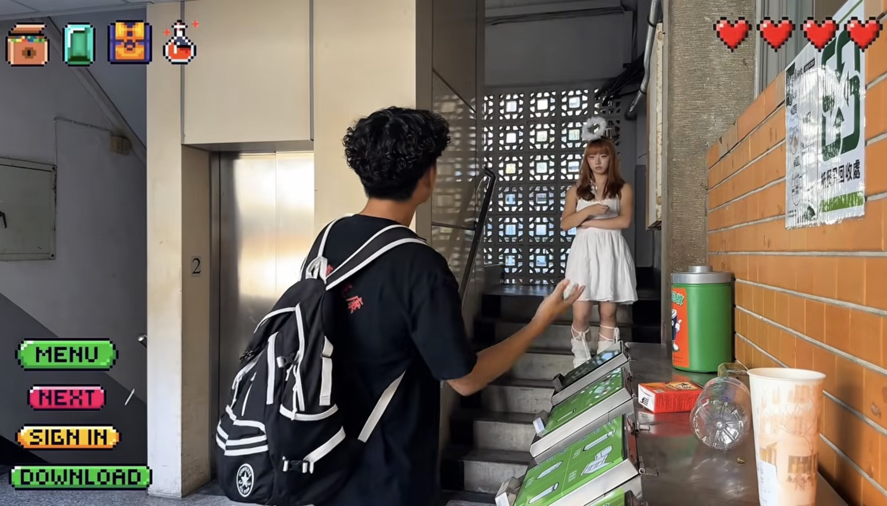

01 / 進入
一場意外的開始
一次平凡的滑手機， 讓阿偉進入意想不到的遊戲世界。
WORLD 01 / 皂續・永續冒險
阿偉被吸進遊戲世界。 三個小挑戰之後，真正的改變，才在日常開始。
手工皂 × 遊戲敘事 × 生活習慣

THE STORY AT A GLANCE
01 / 進入
一次平凡的滑手機， 讓阿偉進入意想不到的遊戲世界。
02 / 挑戰
阿偉在遊戲中完成三個挑戰， 讓永續成為親身參與的經驗。
03 / 延續
回到現實後，任務帶來的影響， 悄悄延伸到生活習慣。
永續不是改變世界，
而是改變每天的習慣。